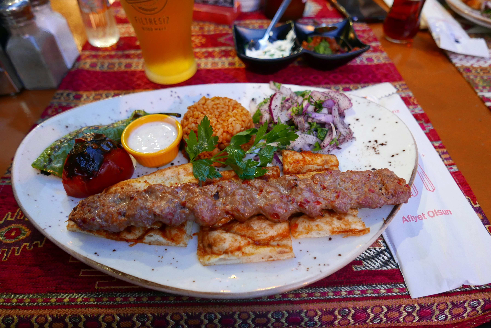

Adana Kebap

Açıklama
Adana Kebap, Türkiye'nin Adana iline özgü bir kebap türüdür. Adanalılar bu kebaba karşı laf söyletmezler, onlar için manevi bir değeri vardır. Binlerce usta bu yemekten ekmek yer yani ekonomik değeri de güçlü bir yemektir. Sırf buna özgü restoranlar açılmaktadır. Adana'yı ziyaret ettiğinizde yemenizi şiddetle tavsiye etmekteyim.
Malzemeler:
- Et: 500 gr zırhtan çekilmiş (veya tek çekim kalın) kuzu kaburga veya dana-kuzu karışık kıyma
- Yağ: 100 gr kuyruk yağı (eti yumuşak tutar ve şişten dökülmesini önler)
- Biber: 1 adet büyük boy kırmızı kapya biber (çok ince kıyılmış ve suyu sıkılmış)
- Baharat: 1 tatlı kaşığı tuz ve 1 yemek kaşığı acı pul biber (veya isot)
Hazırlanışı:
- Kapya biberi çok ince doğrayın. Biberin fazla suyunu avucunuzda sıkarak süzün.
- Kıymayı, kuyruk yağını, suyu sıkılmış biberi, tuzu ve pul biberi geniş bir kaba alın. Tüm malzemeler birbirine iyice yapışıp macun kıvamı alana kadar yaklaşık 10 dakika yoğurun.
- Hazırladığınız harcın üzerini streç filmle kapatın. Harcı en az 1 saat buzdolabında dinlendirerek yağın donmasını sağlayın.
- Dinlenen harçtan portakal büyüklüğünde parçalar koparın. Elinizi hafifçe ıslatarak eti yassı kebap şişlerine (veya çöp şişlere) ince ve uzun şekilde sıkarak yerleştirin.
- Mangalda köz ateşinde sık sık çevirerek her iki yüzünü kızartın. Evde yapacaksanız şişleri fırın telinin üzerine dizin ve önceden ısıtılmış 220 derece fırının ızgara ayarında yaklaşık 15-20 dakika pişirin.
- Pişen kebapları sıcak lavaşın arasına çekerek çıkarın. Yanında közlenmiş domates, yeşil biber ve sumaklı soğan ile sıcak servis edin.
Home